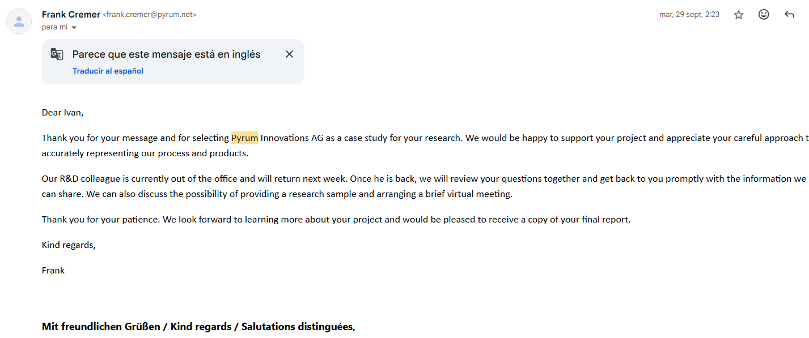
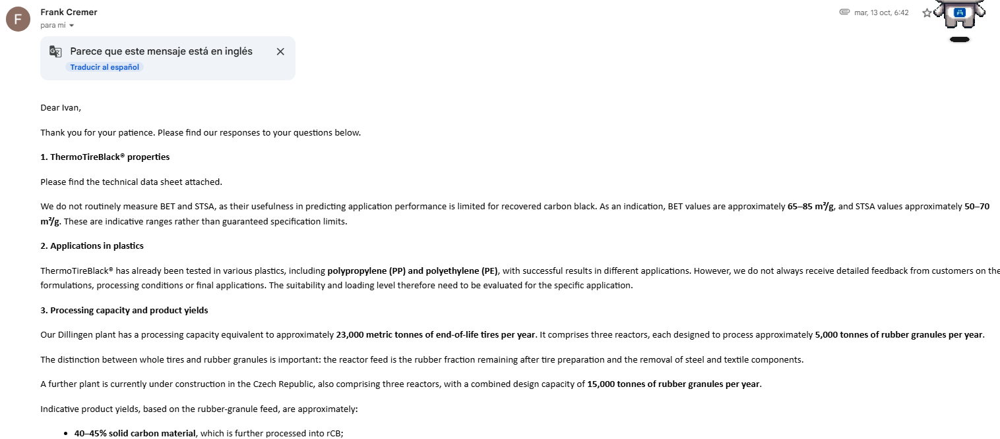
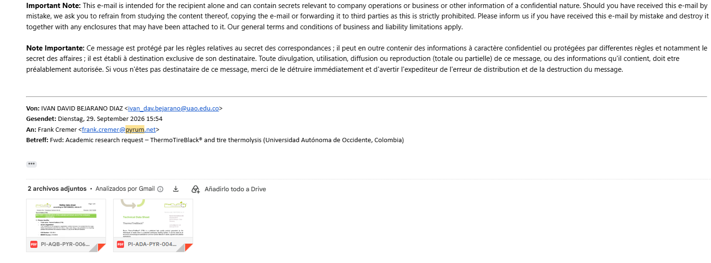
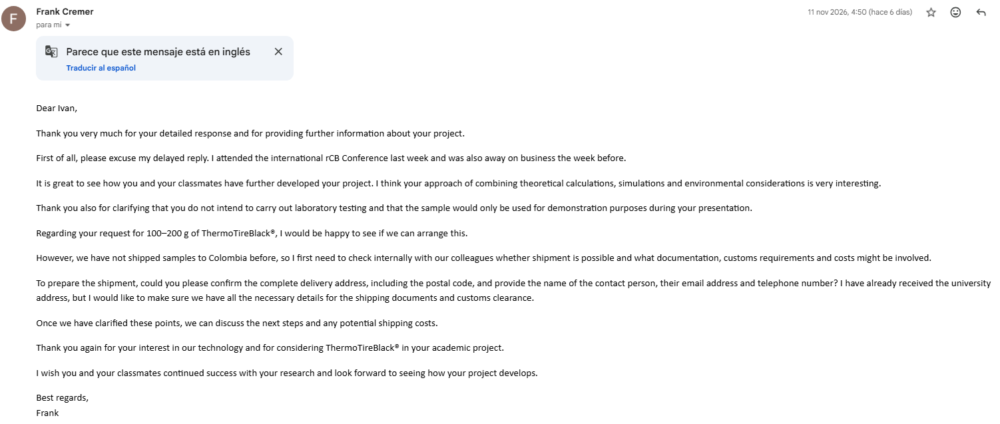

MÓDULO 01
Formulador del compuesto
PP + ThermoTireBlack® + PP-g-MASeleccione la carga de negro de humo recuperado (ThermoTireBlack®, TTB) en peso y el banco responde con las propiedades predichas del compuesto y la masa resultante del encaje transtibial modelado. El compatibilizante PP-g-MA se mantiene en ≈2 % en peso en todas las formulaciones: su función es anclar la apolaridad del polipropileno a la superficie oxidada del rCB y evitar el desprendimiento de carga en la interfaz; sin él, la ganancia modular del modelo no sería alcanzable en la práctica.
Formulación activa
Fracción vol. Vf—
Densidad ρc—
Módulo Ec—
E. específico—
Fluencia asumida—
Masa del encaje—
Apariencia
Volumen de material constante (307,4 cm³, medido sobre el sólido CAD): la masa cambia solo por la densidad del compuesto. Apariencia estimada por carga de carga mineral; no es una medición colorimétrica. Escenario teórico Medida propia CAD
Tabla maestra de formulaciones
| Formulación | w (% p/p) | Vf (%) | ρc (g/cm³) | Ec (GPa) | ΔEc vs matriz | E esp. (GPa·cm³/g) | Fluencia asumida (MPa) | Masa encaje (g) |
|---|
MÓDULO 02
Micromecánica Halpin–Tsai
ξ = 2 (carga particulada)El módulo elástico del compuesto se estima con el modelo semiempírico de Halpin–Tsai, forma estándar para cargas particuladas isotrópicas. Mueva los parámetros y observe la curva completa Ec(w): los marcadores fijos corresponden a las cuatro formulaciones del proyecto.
η = (Ef/Em − 1) / (Ef/Em + ξ) Ec = Em · (1 + ξ·η·Vf) / (1 − η·Vf) Vf = (w/ρf) / (w/ρf + (1−w)/ρm) ρc = 1 / (w/ρf + (1−w)/ρm) E específico = Ec / ρc w en fracción másica
Parámetros de entrada
Ef = 12 GPa es un supuesto bibliográfico para agregados de negro de humo; ξ = 2 es el factor de forma usual para partículas. ρf = 1,80 g/cm³ y ρm = 0,905 g/cm³ son los valores de trabajo del proyecto. Bibliográfico Escenario teórico
Salida del modelo
Vf—
ρc—
Ec—
Δ vs matriz—
E específico—
Curva Ec(w) con ξ = 2. Puntos fijos: formulaciones 0/5/10/15 % del proyecto (1,350 / 1,427 / 1,511 / 1,604 GPa). Si activa las correcciones exploratorias se dibuja además la curva corregida en trazo discontinuo.
MÓDULO 03
Comprobación ISO 10328:2016
axil + flexión simple en sección de media alturaVerificación de concepto dimensionante del encaje bajo los niveles de carga P5 y P6 de ISO 10328:2016 con excentricidad e = 25 mm, sobre la sección de referencia z = −90 mm (media altura): σ = F/A + M·c/I. Es una estimación analítica propia de primer orden: no sustituye el ensayo estructural normalizado ni un análisis por elementos finitos.
Caso de carga
F axial—
M = F·e—
σ axial—
σ flex. AP—
σ flex. ML—
σ máxima—
Sección de referencia: z = −90 mm. A = 1231,2 mm² · c = 37,1 mm · e = 25 mm.
Factor de seguridad por formulación
FS estático—
Fluencia asumida—
FS = fluencia asumida / σ máxima. El dimensionamiento real de una prótesis de PP lo gobiernan creep y fatiga, no la rotura estática: el FS alto indica holgura elástica, no aptitud clínica. Cálculo propio ISO 10328:2016
| Formulación | FS P5 | FS P6 |
|---|
Perfil analítico de esfuerzo en las nueve secciones verificadas
σ(z) = F/A(z) + M·c(z)/Ixx(z), con M = F·e constante a lo largo del encaje (excentricidad e = 25 mm). Reproduce exactamente la comprobación de la sección de referencia (z = −90 mm) y la extiende a las nueve secciones medidas sobre el sólido CAD. Es una estimación analítica de primer orden, no un análisis por elementos finitos: no captura concentraciones locales, anisotropía ni contacto con el muñón.
| z (mm) | A (mm²) | c (mm) | Ixx AP (mm⁴) | σ axial (MPa) | σ flex. AP (MPa) | σ máx (MPa) | FS (formulación activa) |
|---|
—
MÓDULO 04
Modelo 3D del encaje
glTF binario teselado del B-rep verificadoEl mismo sólido B-rep que se abre en SolidWorks y que documenta el plano A3, teselado a 0,15 mm y servido como glTF binario incrustado. Rote con el ratón o un dedo, acerque con la rueda o el pellizco, y use los modos para inspeccionar geometría: despiece del ensamblaje, plano de corte y aristas. El panel inferior derecho resume las magnitudes medidas sobre el sólido.
Secciones estructurales medidas sobre el sólido (z desde el borde proximal)
| z (mm) | A material (mm²) | Ixx flex. AP (mm⁴) | Iyy flex. ML (mm⁴) | Fibra máx. c (mm) | Pared media (mm) | Perím. ext. (mm) |
|---|
MÓDULO 05
Trazabilidad de cada cifra
filtre por procedenciaNingún número de este banco aparece sin su origen. Filtre la matriz para ver únicamente los datos declarados por Pyrum, los bibliográficos, los teóricos o las mediciones propias sobre el modelo CAD.
Matriz de trazabilidad
| Dato | Valor | Procedencia | Fuente |
|---|
MÓDULO 06
Escenarios de ACV (modelo 2022)
GWP100 kg CO₂-eq por t de NFUSalidas del análisis de ciclo de vida de la pirólisis de neumáticos fuera de uso elaborado por Fraunhofer UMSICHT en 2022 (Maga, Aryan & Blömer), documento confidencial citado por el trabajo de grado. Son resultados de un modelo europeo de 2022: no se extrapolan a Colombia ni se presentan como medición propia.
GWP100 por escenario
Lectura de los escenarios
| Escenario | GWP100 |
|---|
El único escenario positivo (+164) corresponde a la valorización energética sin sustitución de negro de humo virgen: la ventaja climática del proceso reside en la sustitución de material, no en la quema. Maga et al. (2022)
MÓDULO 07
Método propuesto, fase por fase
estado real de cada faseRuta experimental y de ingeniería del proyecto con el estado verdadero de cada fase: lo que está documentado como proceso industrial real, lo que existe como modelo o diseño, y lo que permanece como propuesta no ejecutada. No se realizaron ensayos de laboratorio en el marco del trabajo.
Línea de proceso
F1
Pirólisis industrial del granulado de NFU
Proceso real documentado del caso de estudio: ≈23.000 t de NFU/año en Dillingen, tres reactores con ≈5.000 t de granulado/año cada uno; alimentación con granulado de caucho, nunca neumático entero. Pyrum
F2
Caracterización declarada del rCB
BET 65–85 m²/g y STSA 50–70 m²/g como rangos indicativos del productor, no garantizados; ensayado en PP y PE sin detalle de formulación. Pyrum
F3
Purificación ácida documental
Ruta de lavado ácido y enjuague tomada de la literatura para reducir cenizas y residuos solubles; desarrollada como análisis documental, sin ejecución experimental. Bibliográfico
F4
Secado, molienda y tamizado
Propuesta no ejecutada: secado < 2 % de humedad y tamizado < 45 µm para controlar concentración de tensiones. Propuesta
F5
Mezcla seca con PP-g-MA (≈2 % p/p)
Propuesta no ejecutada; el compatibilizante es la variable crítica de interfaz según la literatura de cargas minerales en PP. Propuesta
F6
Compounding por extrusión 180–200 °C
Propuesta no ejecutada; ventana térmica típica de PP con carga mineral y tornillo de mezcla media. Propuesta
F7
Granulado y moldeo por compresión
Propuesta no ejecutada; probetas tipo dog-bone y placas para densidad/MFI. Propuesta
F8
Caracterización y contraste con el modelo
Propuesta no ejecutada: densidad, MFI, tracción (ASTM D638), SEM de fractura y contraste de Ec medido contra Halpin–Tsai de este banco. Propuesta
MÓDULO 08
Equipo, versiones y reproducción
quién hizo qué y cómo repetirloEquipo del trabajo de grado · UAO 2026
| Ivan David Bejarano Diaz | Ingeniería Ambiental · modelado CAD y banco de datos |
| Camila Cobo Jiménez | Ingeniería Ambiental · marco de ACV y trazabilidad |
| Gabriel Gaitán Guerrero | Ingeniería Multimedia · visor 3D y sitio |
| Adrian Fernando Vargas | Ingeniería Multimedia · documentación y verificación |
| Martha Lucia Palacios Peñaranda | Dirección del trabajo (Bióloga, Ph. D.) |
Universidad Autónoma de Occidente, Facultad de Ciencias Básicas, Programa de Ingeniería Ambiental, Santiago de Cali, 2026.
Historial de versiones
| Versión | Hito |
|---|---|
| v0.1 | Prototipo de equipo: calculadora micromecánica, visualización y trazabilidad (PolyComp Studio original). |
| v1.0 | Sitio RCB UAO: tablas, calculadora y descargas del proyecto. |
| v2.0 | PASO CIRCULAR: identidad propia, visor 3D con GLB incrustado y capturas reales. |
| v3.0 | Este repositorio: seis módulos sobre datos.js verificado, secciones estructurales y comprobación ISO reproducibles. |
| v3.1 | Módulo 09: fuentes primarias (correspondencia con Pyrum, fichas TDS y SDS) y enlace cruzado con el sitio PASO CIRCULAR. |
| v3.2 | Exportación en un clic (informe PDF + CSV), perfil analítico de esfuerzo en las nueve secciones y correcciones exploratorias etiquetadas (porosidad, interfaz, aglomeración) en M02. |
Mapa de archivos del repositorio
| Ruta | Contenido |
|---|---|
| index.html | Esta página: estructura, estilos y módulos. |
| studio.js | Lógica de los seis módulos y del visor Three.js. |
| datos.js | Datos verificados generados desde el sólido CAD (propiedades, secciones, comprobación, Halpin, ACV). |
| lib/ | Three.js r147 UMD: núcleo, OrbitControls, GLTFLoader, RoomEnvironment. |
| cad/ | GLB incrustado en base64, GLB/STEP/STL descargables y propiedades.json. |
| img/ | Vistas renderizadas del sólido y diagrama de flujo del proceso. |
Cómo reproducir el modelo y el visor
freecadcmd glb_export.py # B-rep → GLB (tol. 0,15 mm) python -c "…base64 del GLB…" # cad/modelo_glb.js para file:// # datos.js se regenera con cad_props.py sobre el STEP exportado
El sitio abre directamente con index.html (protocolo file://): sin servidor, sin build y sin dependencias remotas. El GLB viaja incrustado en base64 porque fetch está bloqueado bajo file://.
MÓDULO 09
Fuentes primarias: correspondencia y fichas del productor
evidencia declarada, no medidaHilo con Pyrum Innovations AG · capturas reales en orden cronológico
Intercambio documental sostenido entre el 29/09/2026 y el 11/11/2026 con F. Cremer (Head of Product Innovation & Director Sales). Estas capturas son la base de cada dato etiquetado como «Pyrum» en la matriz del módulo 05; ninguna constituye medición propia ni validación independiente.







TDS PI-ADA-PYR-004 · rev. 6, 30/07/2026
| Parámetro | Método | Valor | Unidad |
|---|---|---|---|
| Densidad de vertido | ASTM D1513 | 450–550 | kg/m³ |
| Contenido de carbono | DIN 51732 | > 75 | % |
| Contenido de ceniza | ASTM D8474 | ≤ 25 | % |
| Contenido de azufre | DIN 51732 | 2,0–2,6 | % |
| pH | ASTM D1512 | 6–10 | adimensional |
| Suma de 8 HAP (UE 1272/2013) | DIN ISO 18289 | < 1 | ppm |
| Tamaño de partícula DV(97) | ASTM WK87480 | < 10 | µm |
| Dureza media de pellet (20) | ASTM D5230 | 20–55 | cN |
| Promedio 5 más duros (25 %) | ASTM D5230 | < 90 | cN |
| Dureza máxima de pellet | ASTM D5230 | < 95 | cN |
| Residuo en tamiz (malla 325) | ASTM D1514 | < 0,001 | % |
| Contenido de finos | ASTM D1508 | ≤ 10 | % |
| Tamaño de pellet | ASTM D1511 | ≤ 3,0 | mm |
| Transmitancia extracto tolueno | ASTM D1618 | ≥ 80 | % |
| Volátiles (550 °C) | ASTM D8474 | < 3,0 | % |
| Pérdida por calentamiento | ASTM D1509 | ≤ 2 | % |
SDS-TTB-EN · versión 7, 08/07/2026
| Concepto | Valor documentado | § |
|---|---|---|
| Identificación | CAS 1333-86-4 · EINECS 215-609-9 | 1.1 |
| REACH | Exento: producto de reciclaje, art. 2(7)(d) | 1.1 |
| Clasificación CLP | No clasificado; sin pictogramas ni frases H | 2 |
| Composición | Carbon black 70–90 % · SiO₂ 10–25 % · ZnS < 4,5 % | 3 |
| Exposición ocupacional (CB) | A-Dust 1,25 mg/m³ · E-Dust 10 mg/m³ | 8 |
| pH | 7–9 (ASTM D1512 / DIN ISO 10390) | 9 |
| Densidad verdadera | «Not determined» | 9 |
| Densidad a granel | 600–800 kg/m³ | 9 |
| Inflamabilidad | No inflamable · ignición > 600 °C · autoignición 150 °C · BZ3 | 9 |
| Explosividad de polvo | LEL 100 g/m³ · Pmax 9,8 bar · dP/dt 218 bar/s · Kst 59 bar·m/s | 9.2 |
| Sílice cristalina respirable | < 0,01 % (EN 17289-3) | 9.2 |
| Transporte y agua | No mercancía peligrosa · no peligroso para el agua · TRGS 510 cat. 10–13 | 14–15 |
Coherencia con M02: la SDS declara la densidad verdadera como «Not determined»; la densidad de partícula de Halpin–Tsai sigue siendo supuesto teórico etiquetado. La densidad de vertido TDS y la densidad a granel SDS corresponden a estados y métodos distintos: se reportan sin conciliar. Descargables: TDS PDF · SDS PDF.